Manual de Usuario · Control de Acceso Vehicular UAT CUTM Sur
UNIVERSIDAD AUTÓNOMA DE TAMAULIPAS
Facultad de Ingeniería Tampico · Centro Universitario Sur
Ingeniería en Sistemas Computacionales
Sistema de Control de Acceso Vehicular para la UAT CUTM Sur
App de caseta y portal de administración
Manual de usuario
Evento
Concurso Hackatón · Facultad de Ingeniería Tampico
Equipo
Juan José Santiago Cruz Jared Said Constantino Lemus Juan Carlos Guzmán Antonio Jocelyin Mateo Saldierna Roberto Campillo Martínez
Versión
1.0
Tampico, Tamaulipas · 21 de noviembre de 2026
Índice
1. Introducción
El Sistema de Control de Acceso Vehicular registra las entradas y salidas de vehículos en las tres casetas del campus UAT CUTM Sur y permite consultarlas, obtener reportes y administrar a quién se le permite el acceso. Tiene dos aplicaciones:
App de caseta: la usa el guardia en el celular para registrar entradas y salidas.
Portal de administración: lo usan administradores y supervisores en la computadora para consultas, reportes, catálogos, usuarios y bitácora.
Las capturas de este manual se tomaron en el entorno de pruebas del equipo, con datos ficticios. Los nombres, placas y correos no corresponden a personas reales.
1.1 A quién va dirigido
Al personal de las casetas, al personal de seguridad o coordinación que revisa la información y a los responsables administrativos que dan de alta vehículos, personas y usuarios.
1.2 Requisitos para usar el sistema
Un celular (para la caseta) o una computadora (para el portal) con un navegador actualizado y conexión a internet.
Una cuenta de Google (por ejemplo, Gmail).
Un rol asignado. En este prototipo, la primera vez que una cuenta entra queda dada de alta como Administrador; un administrador puede cambiarle el rol (sección 4.5).
1.3 Roles y permisos
Cada usuario ve solo las opciones que su rol permite. El sistema también lo verifica en el servidor, así que una opción no permitida no puede usarse aunque se intente.
Qué puede hacer cada rol
Función
Guardia
Supervisor
Administrador
Registrar entradas y salidas en la caseta
Sí
No
Sí
Consultar movimientos y exportarlos
Sí
Sí
Sí
Tablero y reportes
No
Sí
Sí
Ver catálogos
No
Sí
Sí
Agregar o editar vehículos, personas y casetas
No
No
Sí
Gestión de usuarios del sistema
No
No
Sí
Bitácora de actividades
No
Sí
Sí
2. Inicio de sesión
2.1 Entrar al sistema
El sistema no tiene contraseña propia: se entra con una cuenta de Google.
Abre la dirección del sistema en el navegador:
App de caseta: https://script.google.com/macros/s/AKfycbznufn6ALqmmlaeK9rBj9KcoRq3gwFsCFbQI0jx3G_wXCkEfyWSmXT7BDJhIpl8wJG8DA/exec
Portal de administración: la misma dirección con ?app=admin al final.
Si el navegador no tiene una sesión abierta, Google te pedirá tu correo y tu contraseña de Google.
El sistema te reconoce por tu correo y abre la app con las opciones de tu rol.
Si tienes varias cuentas de Google abiertas en el mismo navegador, el sistema puede fallar al cargar. Usa una sola cuenta o una ventana de incógnito.
2.2 Comenzar el turno en la caseta
La app de caseta muestra tu nombre y tu correo. Si tienes una caseta asignada, aparece seleccionada. Si no tienes caseta fija, elige en cuál vas a trabajar y pulsa Comenzar turno en Caseta N. Todos tus registros quedarán con esa caseta.
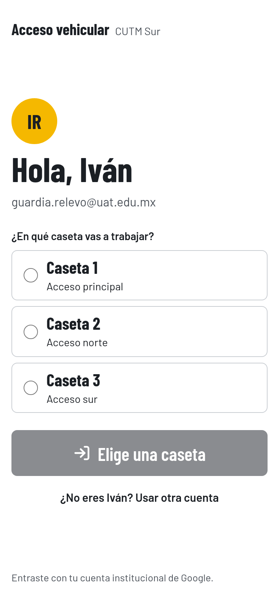
Comenzar turno: el guardia elige su caseta.
2.3 Si tu cuenta no tiene acceso
Si tu correo no está dado de alta o tu usuario está desactivado, verás la pantalla Tu cuenta no tiene acceso con el correo con el que entraste. Pide a un administrador que te registre con tu rol y tu caseta, o pulsa Usar otra cuenta si entraste con un correo equivocado.
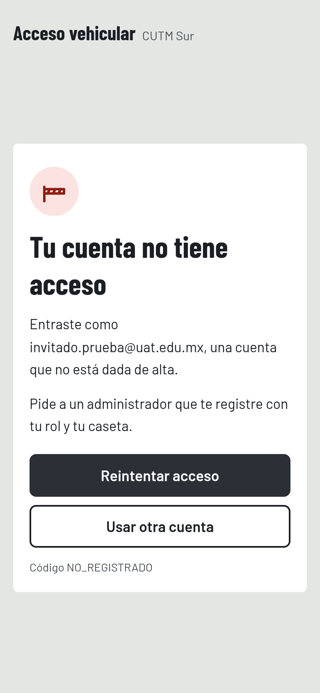
Cuenta sin acceso.
2.4 Terminar el turno y cerrar sesión
En la caseta, toca la pastilla con el nombre de la caseta y tus iniciales, arriba a la derecha. Se abre el panel del turno con la caseta, la hora de inicio y cuántas entradas y salidas registraste.
Cambiar de caseta: vuelve a la pantalla para elegir caseta.
Terminar turno: cierra tu cuenta de Google en ese teléfono, para que el siguiente guardia entre con la suya.
En el portal, usa Cerrar sesión, arriba a la derecha.
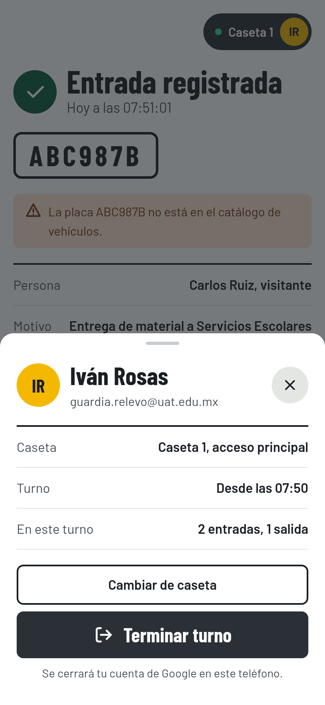
Opciones del turno.
3. App de caseta
3.1 Pantalla de trabajo
Arriba está el campo Placa del vehículo y el botón Verificar placa. Debajo, la lista Hoy en esta caseta muestra los registros del día, del más reciente al más antiguo.
Escribe la placa como aparece en el vehículo, con o sin guiones. El sistema la guarda sin espacios ni guiones y en mayúsculas («xyz-123-a» se guarda como «XYZ123A»); debe tener de 4 a 10 letras o números.
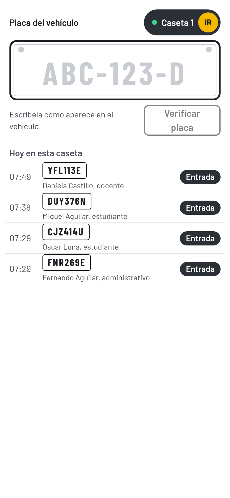
Pantalla de trabajo.
3.2 Registro de entradas
Escribe la placa y pulsa Verificar placa.
Revisa los datos: propietario, tipo de usuario, matrícula o número de empleado, vehículo, si está Autorizado y si está fuera del campus.
Pulsa Registrar entrada. Si necesitas dejar constancia de algo (por ejemplo, una verificación por radio), antes pulsa Agregar nota.
Aparece Entrada registrada con la hora. La fecha y la hora las pone el sistema; no se capturan.
Pulsa Registrar otro vehículo para el siguiente.
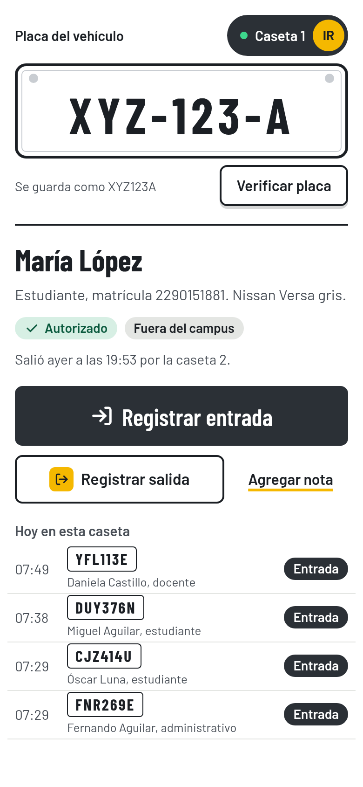
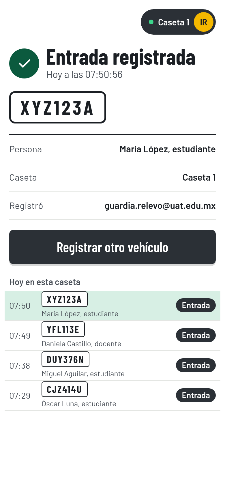
Placa verificada (izquierda) y entrada registrada (derecha).
3.3 Registro de salidas
Escribe la placa y pulsa Verificar placa.
Si el vehículo está Dentro del campus, el sistema indica cuándo y por qué caseta entró y propone Registrar salida como botón principal.
Pulsa Registrar salida. Aparece Salida registrada con el tiempo que el vehículo estuvo dentro.
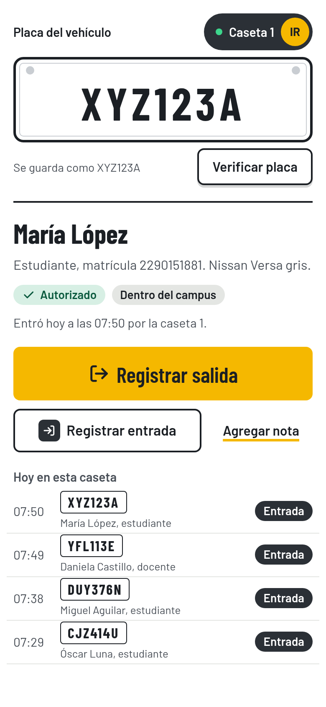
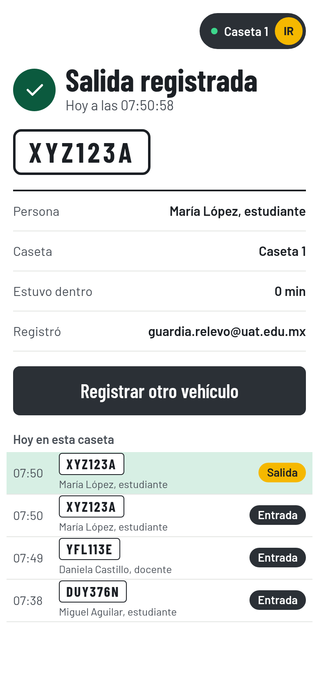
Vehículo dentro del campus (izquierda) y salida registrada (derecha).
3.4 Registro de visitas
Si la placa no está en el catálogo, el sistema muestra Placa no registrada y pide los datos de la visita:
Elige el Tipo de usuario. Viene marcado Visitante; cámbialo si el conductor es estudiante, docente o administrativo con un vehículo no registrado.
Escribe el Nombre del conductor y el Motivo de la visita.
Pulsa Registrar entrada. El registro se guarda con el aviso de que la placa no está en el catálogo.
Cuando la visita salga, basta con verificar la placa y registrar la salida: el sistema toma el nombre y el motivo de la entrada.
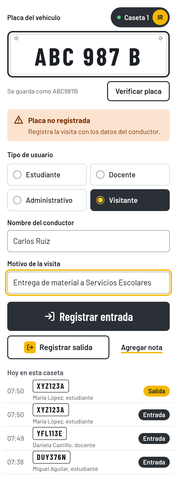
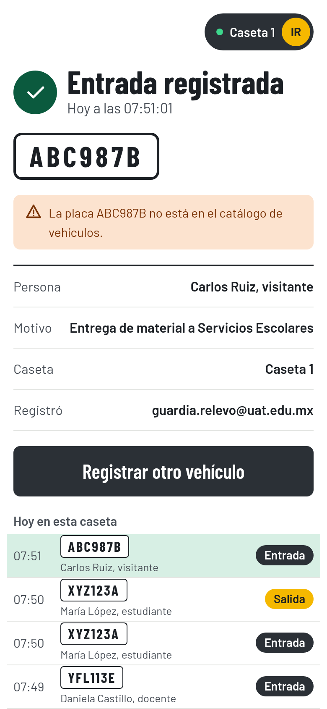
Datos de la visita (izquierda) y entrada de la visita registrada (derecha).
3.5 Avisos al registrar
Estos avisos no impiden guardar el registro: informan al guardia para que aplique el protocolo de seguridad.
Avisos de la app de caseta
Aviso
Qué significa
Placa no registrada
La placa no está en el catálogo de vehículos. Se registra como visita.
No autorizado
El vehículo está en el catálogo pero su autorización está retirada.
Entrada duplicada
Se registra una entrada cuando el vehículo ya tenía una entrada sin salida.
Salida sin entrada
Se registra una salida sin una entrada previa del vehículo.
4. Portal de administración
El menú superior tiene Tablero, Consultas, Reportes, Catálogos y Administración. Solo aparecen las secciones que tu rol permite.
4.1 Tablero
Resume el día: entradas, salidas, vehículos dentro del campus en este momento y entradas de visita; afluencia por hora; totales por caseta; últimos movimientos y vehículos que llevan más tiempo dentro. Usa el filtro de caseta y Actualizar datos para refrescarlo.
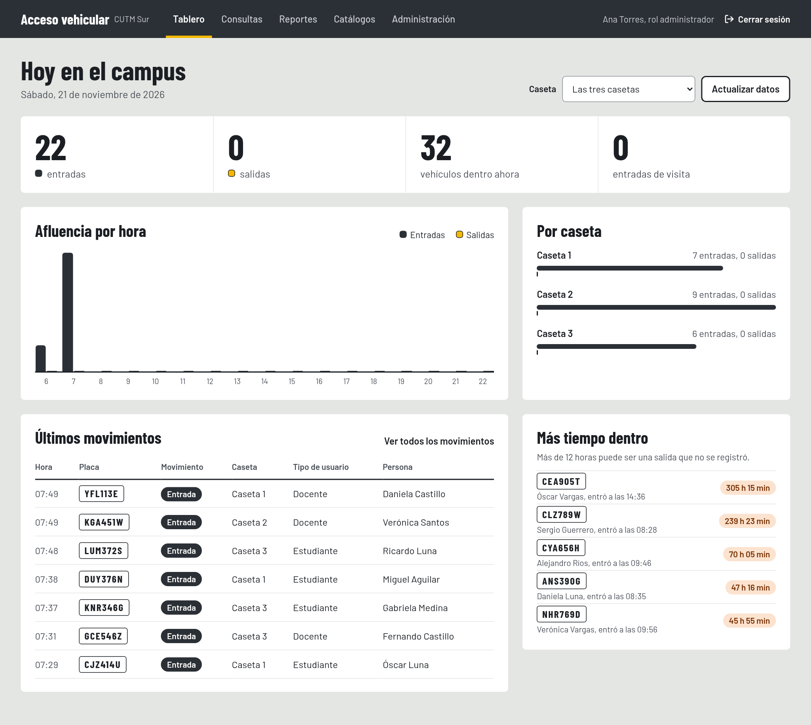
Tablero del día.
4.2 Consultas
Abre Consultas.
Llena uno o varios filtros: Placa (completa o parte), Desde y Hasta, Caseta, Tipo de usuario y Movimiento (entradas, salidas o ambos).
Pulsa Buscar movimientos. Arriba se indica cuántos movimientos coinciden.
Para descargar el resultado, pulsa Exportar a Excel o Exportar a PDF. Cada exportación queda en la bitácora.
Limpiar filtros regresa a los movimientos del día.
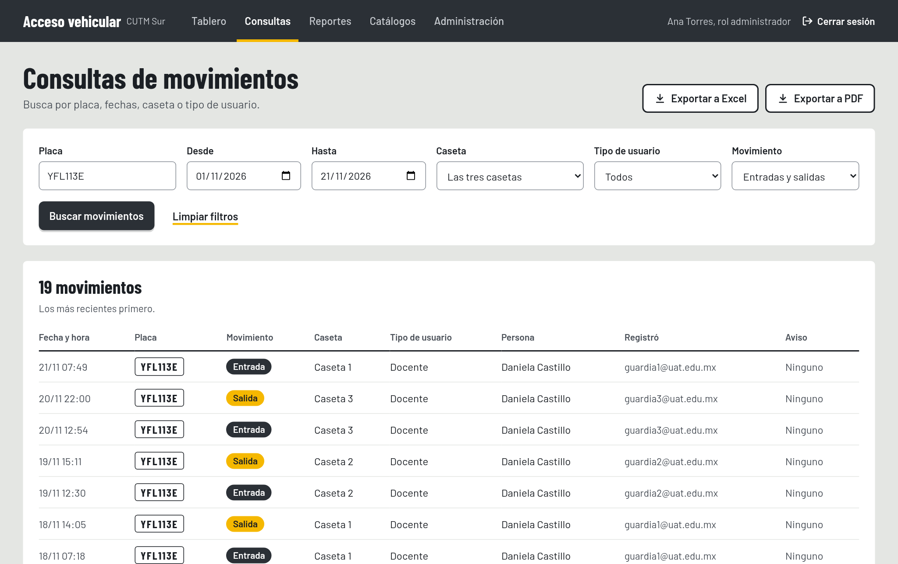
Consulta del historial de una placa en noviembre.
4.3 Reportes
Abre Reportes y elige el periodo con Desde y Hasta (hasta 366 días) y, si quieres, una caseta.
Revisa las secciones:
Entradas y salidas por periodo, agrupadas por día, semana o mes.
Por caseta y por tipo de usuario.
Vehículos más frecuentes.
Horarios de mayor afluencia: mapa de calor por día de la semana y hora.
Descarga el reporte con Exportar a Excel o Exportar a PDF.
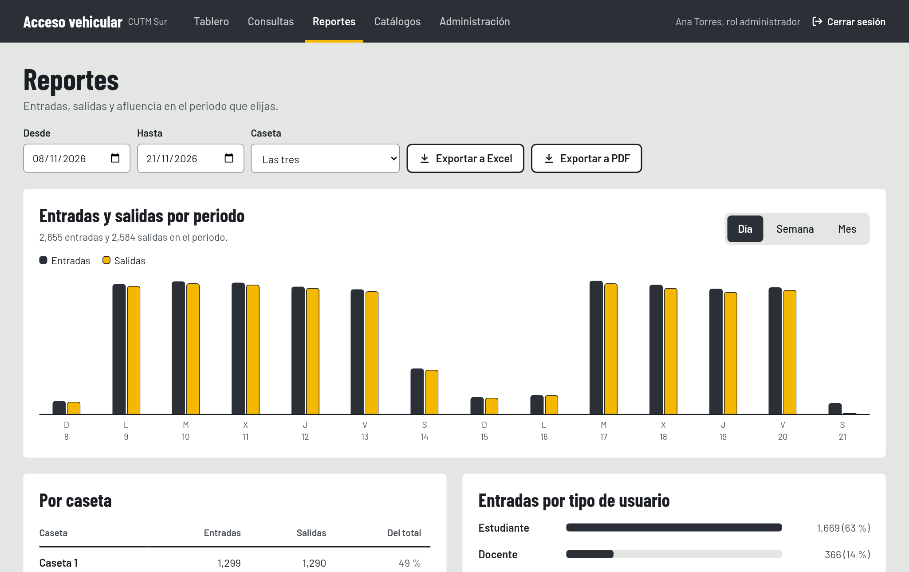
Reporte de entradas y salidas por periodo.
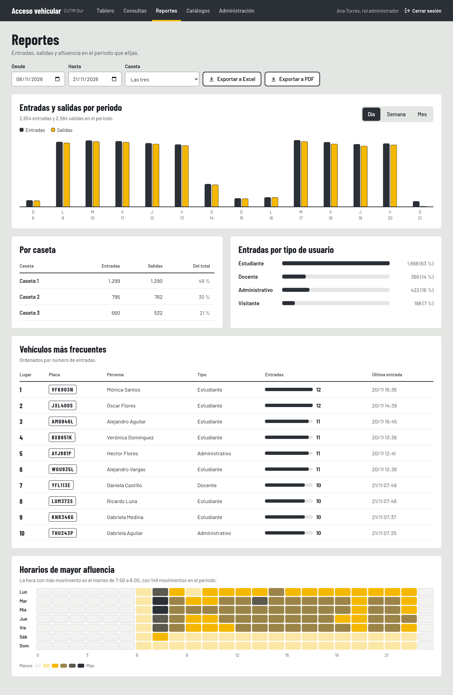
Página completa de reportes: por caseta, por tipo de usuario, vehículos más frecuentes y horarios de mayor afluencia.
4.4 Catálogos
Tiene tres pestañas: Vehículos, Personas y Casetas. Cada una tiene buscador, filtros y la columna Acciones con Editar. Solo el administrador puede agregar o editar.
Agregar un vehículo
En la pestaña Vehículos, pulsa Agregar vehículo.
Escribe la placa, busca a la persona dueña por nombre o matrícula y llena marca, modelo y color.
Guarda. Si la placa ya existe, el sistema lo indica en el campo.
Si la persona aún no existe, primero dala de alta en Personas con Agregar persona: nombre, tipo (estudiante, docente, administrativo o visitante), matrícula o número de empleado (obligatorio salvo para visitantes) y teléfono.
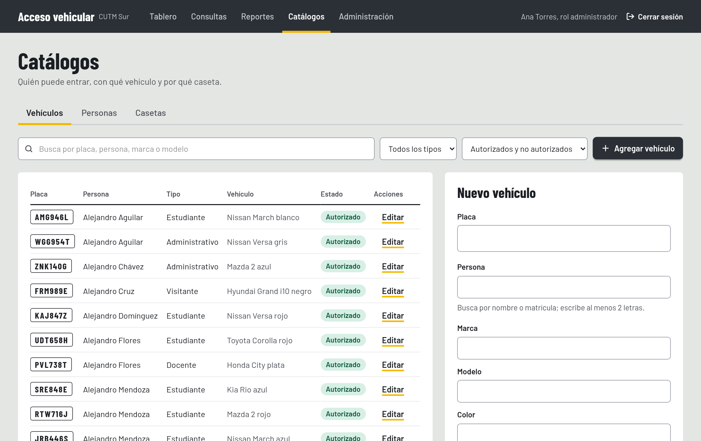
Catálogo de vehículos con el formulario para agregar un vehículo.
Retirar un registro
No se borra nada, para no perder el historial. Para retirar un vehículo, edítalo y quita su autorización; para una persona o una caseta, desactívala. Para cambiar la placa de un vehículo, desautoriza el anterior y agrega el nuevo.
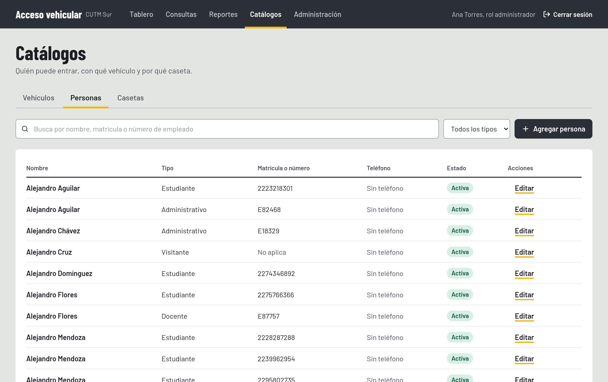
Catálogo de personas.
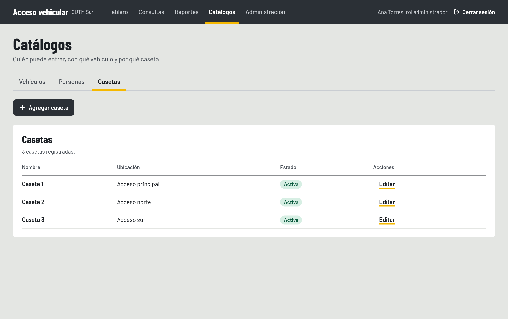
Catálogo de casetas.
4.5 Gestión de usuarios
En Administración, la sección Usuarios del sistema lista quién puede entrar, con su rol, su caseta y su estado.
Agregar un usuario
Pulsa Agregar usuario.
Escribe el correo de su cuenta de Google en Correo institucional y el Nombre, y elige el Rol: Guardia, Supervisor o Administrador.
Para un guardia, elige su Caseta o «Sin caseta fija»; sin caseta fija, el guardia la elige al comenzar el turno.
Pulsa Guardar usuario. Desde ese momento la persona puede entrar con su cuenta.
Como el prototipo se publica desde una cuenta personal, Google solo comparte con el sistema el correo de esa cuenta. Las demás personas entran una vez, quedan registradas como «Invitado …» y el administrador les asigna el rol y la caseta con Editar.
Editar o desactivar un usuario
Pulsa Editar en la fila del usuario para cambiar su rol o su caseta, o para desactivarlo. El sistema no permite dejar el sistema sin un administrador activo ni que un usuario se desactive a sí mismo.
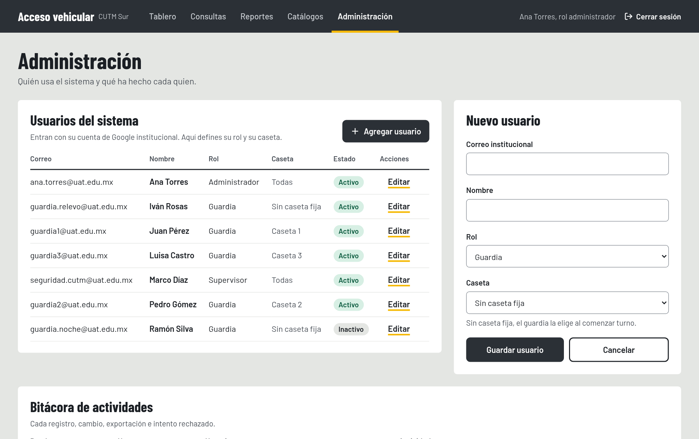
Usuarios del sistema con el formulario para agregar un usuario.
4.6 Bitácora de actividades
Debajo de los usuarios, en Administración, la Bitácora de actividades muestra cada acceso, registro, cambio, exportación e intento rechazado, con fecha y hora, usuario, actividad, resultado y detalle. Filtra por Desde, Hasta, Usuario y Actividad. La bitácora no se puede editar ni borrar.
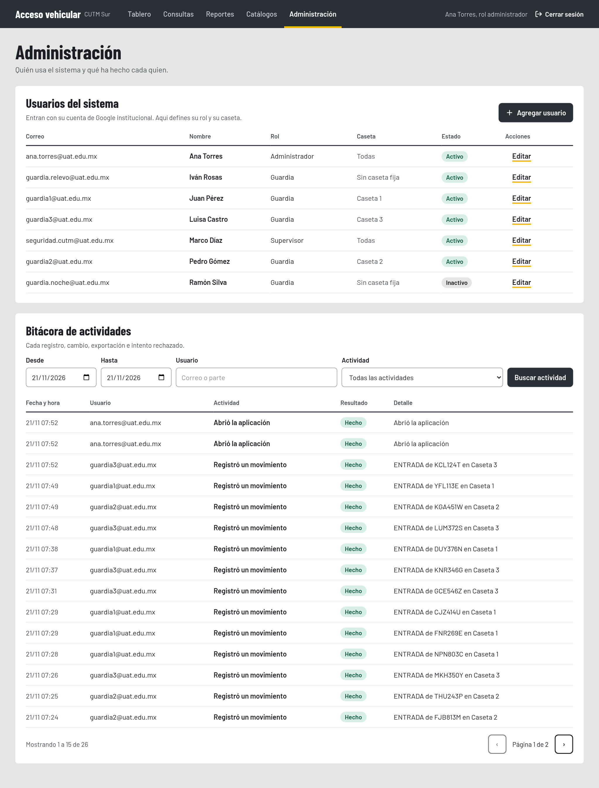
Administración: usuarios del sistema y bitácora de actividades.
El supervisor ve el mismo portal en modo de solo lectura: no tiene botones para agregar ni editar.
5. Registro vehicular para alumnos
Los alumnos pueden solicitar el registro de su vehículo en línea, sin acudir de forma presencial:
Confirmar la inscripción. En https://hackathonfrontend.452111.xyz, el alumno entra con su correo institucional o matrícula y su contraseña de la UAT. El sistema verifica que está inscrito y lo da de alta en el padrón con su nombre oficial. La contraseña se usa únicamente para esa verificación y no se guarda.
Enviar la solicitud. En el mismo portal, captura la placa y el NIV (17 caracteres), adjunta las fotos de su INE y de su tarjeta de circulación y acepta el aviso de privacidad.
Consultar el resultado. En el portal ve el estado: pendiente, en revisión, requiere atención o aprobada, con la indicación del revisor.
Mostrar el pase. Si la solicitud se aprueba, en el detalle aparece su pase de acceso con código QR.
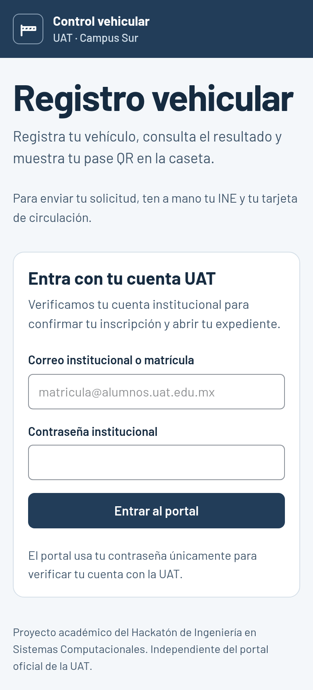
Sitio de registro de alumnos.
Para el personal de Control Vehicular: las solicitudes se revisan en la hoja privada con el menú Registro vehicular → Abrir revisión de la solicitud. El sistema deja la revisión prellenada; el revisor la confirma y usa Publicar resultado seleccionado.
6. Mensajes y solución de problemas
Mensajes frecuentes
Mensaje o situación
Qué hacer
«Tu cuenta no tiene acceso»
Pide a un administrador que te dé de alta o que reactive tu usuario. Verifica que entraste con la cuenta de Google correcta.
No se pudo identificar tu cuenta
El sistema no recibió tu correo. Cierra las demás cuentas de Google o usa una ventana de incógnito; si sigue, avisa al administrador.
«No hay conexión con el servidor»
Revisa la conexión del celular y vuelve a intentar. Si no hay conexión, anota el registro en el formato en papel.
El sistema está ocupado
Otra caseta está guardando al mismo tiempo. Espera un momento y vuelve a pulsar el botón.
«No tienes permiso para esta acción»
Tu rol no permite esa función. Si la necesitas, pídela a un administrador.
Un campo marcado en rojo
Corrige el dato que indica el mensaje junto al campo; por ejemplo, la placa debe tener de 4 a 10 letras o números.
«Esta placa no tiene números»
Revisa que la placa esté bien escrita antes de verificarla.